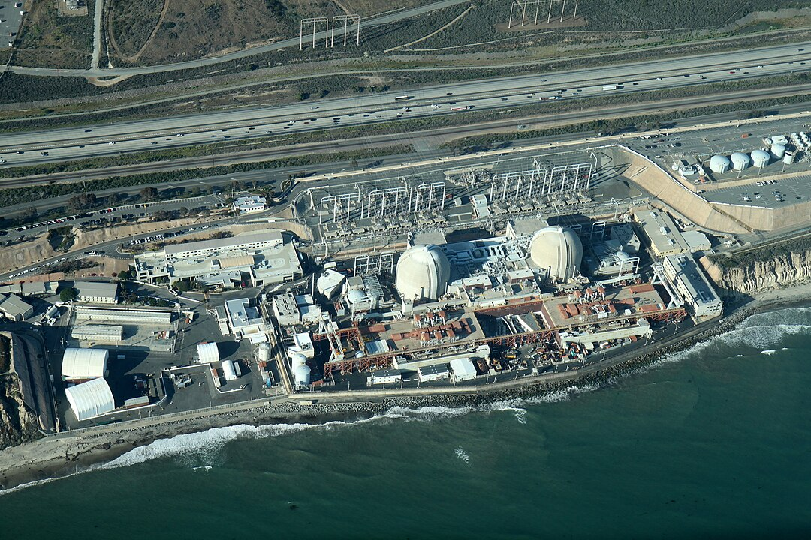

TL;DR: The closure of the San Onofre removed a source of reliable carbon-free energy capacity from the West Coast. The decision failed to balance safety with enlightened environmental science, leading to potentially disastrous unintended consequences.
San Onofre, California, is named after St. Onuphrius, an obscure patron Saint of weavers, nudists, and fortune (among other things). As a one-time resident of Southern California, that seems entirely appropriate!
It is also the site of a 2.2 GW nuclear power plant, a landmark on the drive from San Diego to Los Angeles. The plant is situated in a sparsely populated coastal spot just north of the Marine base at Camp Pendleton between I-5 and the Pacific Ocean. Due to recurring problems and regulatory issues, the last reactor was shut down in 2013, and it will be decommissioned over the next 20 years or so.

The decommissioning story is a climate tragedy because nuclear power provides a reliable, always-on baseload supply, precisely what we expect when plugging in an appliance. Replacing this supply with solar (what the activists would lead you to believe is a simple swap) is problematic—the largest solar power facility in the world, located in Xinjiang Province, China, covers an area the size of New York City and, while rated at 5 GW peak power, it can only generate when the sun shines. Even if the entire output of such a solar plant could be stored and used as needed, it would take a solar field nearly eight times this size (more than twice the size of Orange County) to provide the power San Onofre did.
The climate tragedy of this closure comes from the inevitable replacement of lost generation capacity with natural gas generation. It isn’t easy to calculate the precise climate consequence, but quantitative precision is unimportant: The closure added to the climate problem because natural gas is the only option that can match demand when renewables are unavailable. Using natural gas to produce a gigawatt of power adds just over 3.7 million tons of CO2 to the atmosphere annually. In contrast, the amount of greenhouse gases released by the existing plant, when it was operating, was much smaller.
I understand the concerns about nuclear safety. I’m old enough to remember the 1979 Three Mile Island incident in Harrisburg, PA, and its unfortunate coincidence with the popular movie The China Syndrome (a Hollywood thriller about a meltdown concealed by unscrupulous operators). This is an example of the distortion of reality by art. Despite the anxiety and breathless news coverage, no fatalities resulted from the Three Mile incident—the only consequence was to further stoke fear of nuclear energy as somehow “unsafe”. This began a cascade of closures over safety concerns expressed by ordinary citizens, not engineers. This psychological effect is similar to air travel, which feels riskier in the aftermath of a prominent crash, despite ample data to the contrary.
But that’s not the real tragedy: Electric utilities, particularly in California, are highly regulated, on the one hand, and convenient scapegoats on the other. Anti-nuclear activists celebrated the closure of San Onofre despite job losses and pushed to make the closure permanent. The estimated cost of actively decommissioning the plant (still underway) is $3.4 billion 1 , passed on to the public to avoid bankruptcy and its negative consequences. So, jobs were lost, and southern California customers are paying to “clean up” an otherwise secure facility, with no result other than assuring that the nuclear power plant will be difficult to restart if needed. It might satisfy a blood lust to force utilities to pay for their sins, but the costs have to be passed on to users—like tariffs, the costs are borne by all and harm vulnerable consumers the most.
Yet, with the increasing environmental concern over emissions and pledges by large companies, restarting mothballed power plants is now happening. Even a second reactor at Three Mile Island (not the one involved in the incident) is being restarted. The reason is simple: Microsoft is financing the restart because it must buy carbon-free electricity to balance its net zero pledge with the increased power required for AI.
It gets worse for California: Gov. Newsom recently signed an Executive Action that would ban the sale of vehicles that aren’t “zero-emission” after 2035 (that’s not that far away!). Roughly speaking, households spend as much on electricity as they do on gasoline, so if all zero-emission vehicles are electric, then the amount of power available will need to double. The grid must grow more rapidly than projected to support that increase. Such a change will inevitably delay the transition to renewables, adding (not alleviating) greenhouse gas-related climate issues.
Suppose San Onofre had been allowed to go offline instead of having its components sold as scrap, fuel transported off-site, etc.. In that case, it might have been called upon to provide a carbon-free power source to supplement new renewables and advanced computation. Instead, fear won, and the environmentalist cult notched a hollow victory.
In the face of assured negative consequences, we must not succumb to irrational fear.
Edison International Form 10-K, February 22, 2024, page 34. Downloaded from edison.com on October 11, 2024.